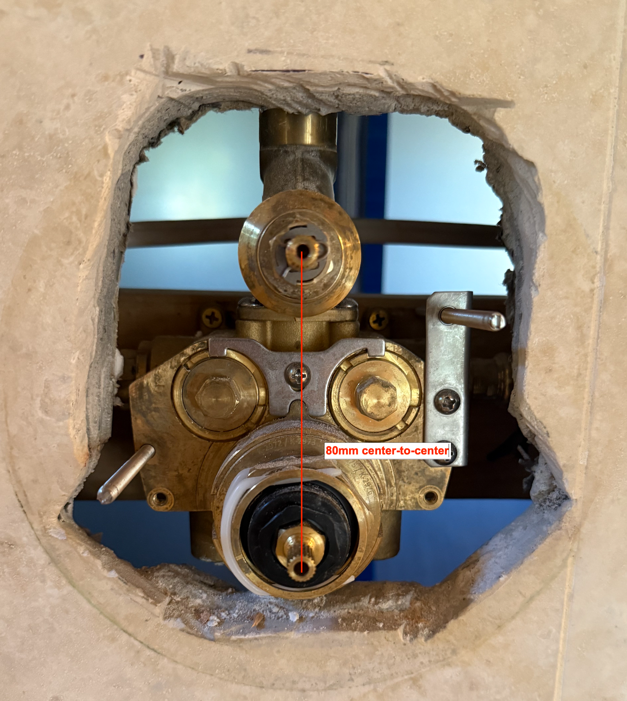

FT02 project home
PLUMBER START HERE
Fit-trial release | Physical and permanent checks remain open
Start with the actual installation
The owner needs an over-cut cover and a sound landing for the existing gasket while preserving the travertine. This is a fit-trial part, not a replacement for the factory trim or concealed waterproofing.

Parts to identify
Main: Purist K-T14489-4-BN over K-2973-KS-NA. Separate diverter: K-T14491-4-BN over K-737-K-NA. Verify the hardware revision. Upper main control is volume; lower is thermostatic. Bring the correct factory adapters/screws, spline adapters, hubs/bonnets or rings, nuts, plate/gasket and handles.
Already known
Foam is attached to the inner plate and meets its outer edge; approximately 6 mm wide/deep, 15.44 mm uncompressed total stack. Owner confirms the 4.56 inch trim rods touch rear wood. The two mounting bores are 5.66 mm; final planar layout is R006. Installed tip distances were taken in 3D.
First supported fit
Remove decorative trim/inner plate only as needed. Keep the factory hardware organized and protect cartridges. Slide the custom backing over the exposed hardware; reinstall foam-backed inner plate, nuts, decorative cover and correct handles in that order. Nuts stay behind the unperforated decorative face. Support the inner assembly; do not tighten across a void.
Separate three depth problems
Adjusting a trim rod does not move the control shaft. Diagnose the factory attachment before proposing valve relocation.

A - Trim rods meet wood
Kohler stud 1038645 is 10-24 x 4.56 inches overall (115.824 mm). Guide 1041504-2-F limits projection to 7/16 inch (11.1125 mm) from the finished wall and calls for adjustment when the plate will not sit flat. This is not a stem limit or automatic permission to add sheet thickness to the datum. Inspect the actual new seating stack.
Wood relief is conditional
Inspect the member and nearby pipe/cable from the open rear. If wood blocks retraction and other depths pass, choose local clearance that preserves the member, services and rod engagement. No blind depth, automatic rod cutting or tile drilling is specified.
B - Adapters and handles
Try the correct factory adapter/screw combination and verify full hub/bonnet or ring attachment. Main guide lists short/middle/long adapters with corresponding upper/lower screws; see reference links. Diverter uses #1/#2/#3 options. Do not substitute a generic screw or use tightening to compensate for poor engagement.
C - Valve position
Only if appropriate adapters and rod adjustment cannot make the complete supported stack work, assess valve depth/alignment. Include actual sheet plus support/bedding height. No numeric move is justified by the reflective scan. Refit both plate templates before committing a changed valve position.
Support, seal, test and hand back
No new CAD survey is expected. If a trial fails, mark the exact interference/contact location and provide one useful photograph.

Supported trial
Center the main backing on the cover with the removable guide; verify the entire factory foam band lands on metal. Check the diverter rear plate/contact ring separately: 80 mm is a trial aperture, not a measured gasket diameter. Both backings must seat without rocking, sliding or bowing; keep a visible neighbor gap.
Two support branches
If the sound stone already supports the complete assembly, retain it. If a specific contact zone lacks support, rebuild that zone on solid backing through rear access where practical. Do not bridge with loose grout, silicone or unsupported mortar. The guide gives material roles and a concealed-waterproofing inspection branch.
Water paths and success checks
New outer backing-to-stone seal is continuous. The factory cover drain remains open at 6 o'clock and drains onto the FRONT of the backing. Preserve service removal. After required cure: verify handle travel, safe temperature limit/function, dry rear during plumbing use, then controlled shower-spray ingress check. Stop on movement, leakage, trapped water or incomplete factory attachment. Record actual part revision and outcome; permanent use remains unverified until these pass.